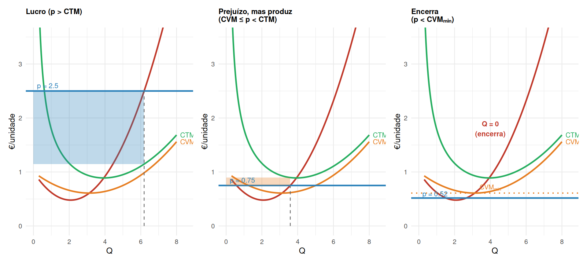
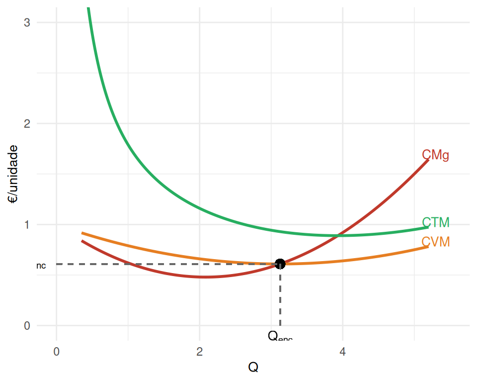
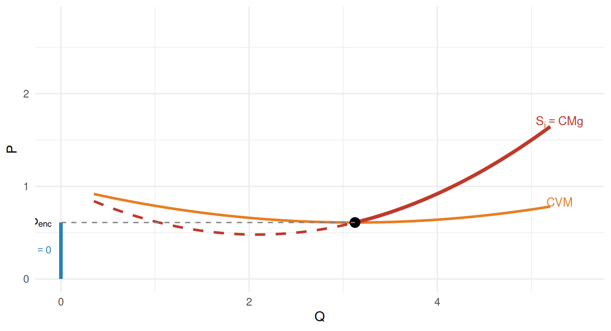
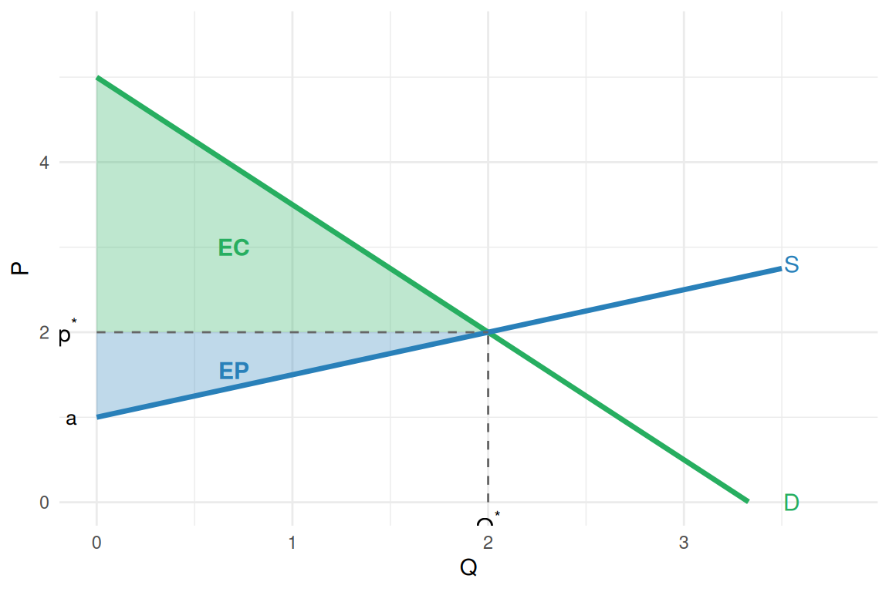

Oferta, Limiar de Encerramento e Excedente do Produtor
Microeconomia — Licenciatura em Contabilidade e Administração
Revisão: A Escolha Óptima do Produtor
No mercado de concorrência perfeita, a empresa \(i\) toma o preço \(p\) como dado e resolve:
\[\max_{Q_i} \Pi = p Q_i - CV(Q_i) - CF\]
A condição de primeira ordem (CPO) dá:
\[\frac{d\Pi}{dQ_i} = 0 \iff p = CMg(Q_i)\]
A condição de segunda ordem (CSO) exige que \(CMg\) seja crescente no ponto óptimo.
. . .
Important
A quantidade óptima situa-se na parte ascendente da curva \(CMg\).
Rendibilidade: Lucro vs Prejuízo
O lucro pode ser reescrito em termos de custos médios:
\[\Pi = pQ - CT = Q(p - CTM)\]
| Condição | Resultado |
|---|---|
| \(p > CTM\) | \(\Pi > 0\) — Lucro |
| \(p = CTM\) | \(\Pi = 0\) — Ponto de equilíbrio (break-even) |
| \(CVM \leq p < CTM\) | \(\Pi < 0\) — Prejuízo, mas a empresa produz |
| \(p < CVM\) | \(\Pi < 0\) — Empresa deve encerrar |
. . .
A questão central: mesmo com prejuízo, quando vale a pena continuar a produzir?
Decisão de Encerramento: a lógica
No curto prazo, os custos fixos são irrecuperáveis (sunk costs): a empresa paga-os independentemente de produzir ou não.
A decisão relevante é comparar:
- Produzir: \(\Pi = RT - CV - CF\)
- Encerrar (Q=0): \(\Pi = -CF\)
. . .
A empresa produz se produzir for menos mau do que encerrar:
\[RT - CV - CF \geq -CF\] \[RT \geq CV\] \[p \geq CVM\]
. . .
Important
Limiar de encerramento: a empresa fecha se \(p < CVM_{min}\).
Enquanto \(p \geq CVM_{min}\), compensa produzir mesmo com prejuízo.
Os Três Cenários de Rendibilidade
Limiar de Encerramento: geometria
O limiar de encerramento é o preço mínimo que justifica produzir: \(p_{enc} = CVM_{min}\), onde \(CMg = CVM\).
Warning in geom_point(aes(x = Q_shut, y = p_shut), size = 3, colour = "black"): All aesthetics have length 1, but the data has 486 rows.
ℹ Please consider using `annotate()` or provide this layer with data containing
a single row.Warning in geom_segment(aes(x = 0, xend = Q_shut, y = p_shut, yend = p_shut), : All aesthetics have length 1, but the data has 486 rows.
ℹ Please consider using `annotate()` or provide this layer with data containing
a single row.Warning in geom_segment(aes(x = Q_shut, xend = Q_shut, y = 0, yend = p_shut), : All aesthetics have length 1, but the data has 486 rows.
ℹ Please consider using `annotate()` or provide this layer with data containing
a single row.
No mínimo de \(CVM\):
- \(CMg = CVM\) (propriedade algébrica)
- Se \(p < p_{enc}\): encerra (\(Q=0\))
- Se \(p = p_{enc}\): indiferente
- Se \(p > p_{enc}\): produz em \(CMg = p\)
Nota: No curto prazo a empresa pode ter prejuízo e continuar a operar, desde que cubra os custos variáveis.
A Curva de Oferta Individual
No mercado concorrencial, a curva de oferta individual é a curva \(CMg\) acima do limiar de encerramento.
\[S_i(p) = \begin{cases} Q_i^* : p = CMg(Q_i^*), \ CMg \text{ crescente} & \text{se } p \geq CVM_{min} \\ 0 & \text{se } p < CVM_{min} \end{cases}\]
. . .

Oferta de Mercado
A oferta de mercado agrega as ofertas individuais de todas as \(n\) empresas:
\[Q_S(p) = \sum_{i=1}^{n} Q_i^S(p)\]
Se todas as \(n\) empresas forem idênticas com oferta individual \(Q_i^S(p)\):
\[Q_S = n \cdot Q_i^S(p)\]
. . .
Exemplo: Se cada empresa tem \(CMg = 2 + Q_i\) (logo \(Q_i^S = p - 2\), para \(p \geq 2\)) e existem \(n = 2\) empresas:
\[Q_S = 2(p-2) = 2p - 4 \quad (p \geq 2)\]
Na forma inversa: \(P = 2 + \frac{Q}{2}\) — a curva de oferta de mercado tem menor inclinação que a individual.
Determinantes da Oferta
A curva de oferta desloca-se quando se alteram variáveis exógenas à empresa:
| Variável | Efeito sobre a oferta |
|---|---|
| Tecnologia \(A\) (melhor) | \(\uparrow\) oferta (desloc. p/ direita) |
| Custo do capital \(r\) (sobe) | \(\downarrow\) oferta |
| Salário \(w\) (sobe) | \(\downarrow\) oferta |
| Preço de matérias-primas \(p_m\) (sobe) | \(\downarrow\) oferta |
| Preço de bens intermédios \(p_i\) (sobe) | \(\downarrow\) oferta |
. . .
Note
Uma alteração do preço de venda \(p\) não desloca a curva — apenas move a empresa ao longo da mesma curva de oferta.
Excedente do Produtor: definição
NoteExcedente do Produtor (EP)
O excedente do produtor é a diferença entre o que o produtor recebe e o mínimo que estaria disposto a aceitar por cada unidade produzida.
Graficamente: área acima da curva de oferta até ao preço de mercado.
. . .
Para a curva de oferta linear \(P = a + bQ\), ao preço de equilíbrio \(p^*\) e quantidade \(Q^*\):
\[EP = \frac{1}{2}(p^* - a) \cdot Q^*\]
. . .
Relação com o lucro:
\[\Pi = RT - CV - CF = EP - CF\]
O excedente do produtor é o lucro mais os custos fixos — ou seja, a contribuição da actividade para cobrir os custos fixos e gerar lucro.
Excedente do Produtor: geometria

O excedente total = \(EC + EP\) representa o ganho total das trocas no mercado.
Excedente do Produtor vs Lucro
Importante: numa curva de oferta linear com ordenada na origem \(a\) (= \(CVM_{min}\)):
\[EP = \frac{1}{2}(p^* - a) Q^* = RT - CV\]
\[\Pi = EP - CF\]
. . .
| Sem CF | Com CF (CP) | |
|---|---|---|
| \(p > CTM\) | — | \(\Pi > 0\), empresa opera |
| \(CVM \leq p < CTM\) | — | \(\Pi < 0\), EP > 0, empresa opera |
| \(p = CVM_{min}\) | EP = 0 | \(\Pi = -CF\), limiar encerramento |
| \(p < CVM_{min}\) | EP < 0 | Empresa encerra |
. . .
Important
No longo prazo, os custos fixos desaparecem (todos os factores são variáveis). Então EP = lucro económico de longo prazo.
Exercícios
Exercício 1 (Escolha Múltipla)
Uma empresa concorrencial tem \(CVM_{min} = 4€\) e \(CTM_{min} = 7€\). O preço de mercado é \(p = 5€\). Qual das seguintes afirmações é correcta?
(A) A empresa encerra imediatamente, pois tem prejuízo.
(B) A empresa produz, pois o preço cobre os custos variáveis, mas tem prejuízo a curto prazo.
(C) A empresa tem lucro positivo.
(D) O excedente do produtor é negativo.
TipSolução
Resposta: (B)
\(p = 5 > CVM_{min} = 4\) → a empresa produz (o preço cobre os custos variáveis).
\(p = 5 < CTM_{min} = 7\) → há prejuízo a curto prazo.
O EP = \(RT - CV > 0\), mas \(\Pi = EP - CF < 0\).
Exercícios
Exercício 2 (Escolha Múltipla)
Num mercado com 4 empresas idênticas, cada uma com \(CMg_i = Q_i\) (e limiar de encerramento em \(p=0\)). A procura de mercado é \(Q_d = 20 - P\). Qual o preço de equilíbrio?
(A) \(P^* = 2\)
(B) \(P^* = 4\)
(C) \(P^* = 6\)
(D) \(P^* = 8\)
TipSolução
Resposta: (B)
Da oferta individual: \(P = CMg_i = Q_i \Rightarrow Q_i^S = P\).
Oferta de mercado: \(Q_S = 4P\).
Equilíbrio: \(4P = 20 - P \Rightarrow 5P = 20 \Rightarrow P^* = 4\).
Quantidade: \(Q^* = 20 - 4 = 16\). Verificação: \(Q_S = 4 \times 4 = 16\) ✓
Exercício 3 (Desenvolvimento)
O mercado de um bem tem as seguintes equações (com \(P\) em €, \(Q\) em milhares de unidades):
\[Q_d = 24 - 2P \qquad Q_s = 2P - 4 \quad (P \geq 2)\]
a) Determine o preço e a quantidade de equilíbrio.
b) Calcule o Excedente do Consumidor (EC) e o Excedente do Produtor (EP).
c) Qual o excedente económico total? O que representa?
d) O preço mínimo da curva de oferta é \(P_{min} = 2€\). O que representa economicamente este valor?
TipSolução
a) Equilíbrio: \(24 - 2P = 2P - 4 \Rightarrow 28 = 4P \Rightarrow P^* = 7€\), \(Q^* = 24-14 = 10\).
b) Intercepto da procura: \(Q_d=0 \Rightarrow P=12\). Intercepto da oferta: \(P=2\).
\(EC = \tfrac{1}{2}(12-7)\times 10 = 25\) (mil €) \(\quad EP = \tfrac{1}{2}(7-2)\times 10 = 25\) (mil €)
c) \(EE = EC + EP = 50\) mil €. Representa o valor total gerado pelas trocas voluntárias neste mercado.
d) \(P_{min} = 2€\) é o limiar de encerramento — abaixo deste preço nenhuma empresa produz.
Síntese
- A empresa maximiza \(\Pi\) produzindo onde \(p = CMg\) (parte ascendente).
- A rendibilidade depende de \(p\) vs \(CTM\): lucro se \(p > CTM\), prejuízo se \(p < CTM\).
- Mesmo com prejuízo, a empresa não encerra enquanto \(p \geq CVM_{min}\) — os custos fixos são irrecuperáveis.
- O limiar de encerramento é \(p_{enc} = CVM_{min}\) (mínimo da curva \(CVM\)).
- A curva de oferta individual = curva \(CMg\) acima de \(p_{enc}\).
- A oferta de mercado = soma das ofertas individuais.
- O excedente do produtor é a área acima da oferta até ao preço: \(EP = RT - CV\).
- Relação fundamental: \(\Pi = EP - CF\).